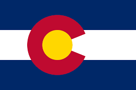

Le'olani Enos
About Me
I'm Le'olani Enos and I'm exited to be in this course! I'm from Denver, Colorado and I've lived here all my life. I love to read and listen to music. Both take up a lot of my time. I also love to play video games! My favorite game series is The Legend of Zelda, so if you play it, let me know! I'm currently studying computer science and am looking forward to getting my degree someday. Nice to meet you!
Colorado, USA

Famous for the Rocky Mountains, the state of Colorado has a diverse climate and ecosystem from high mountains, to rolling plains. Though technically a desert, Colorado is a popular vacction spot for those who enjoy skiing and hiking. It is a beautiful state to visit.
Official Colorado State Flag